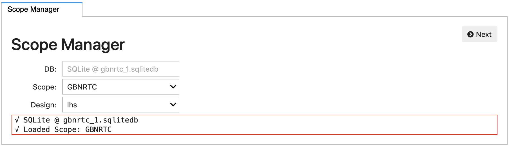
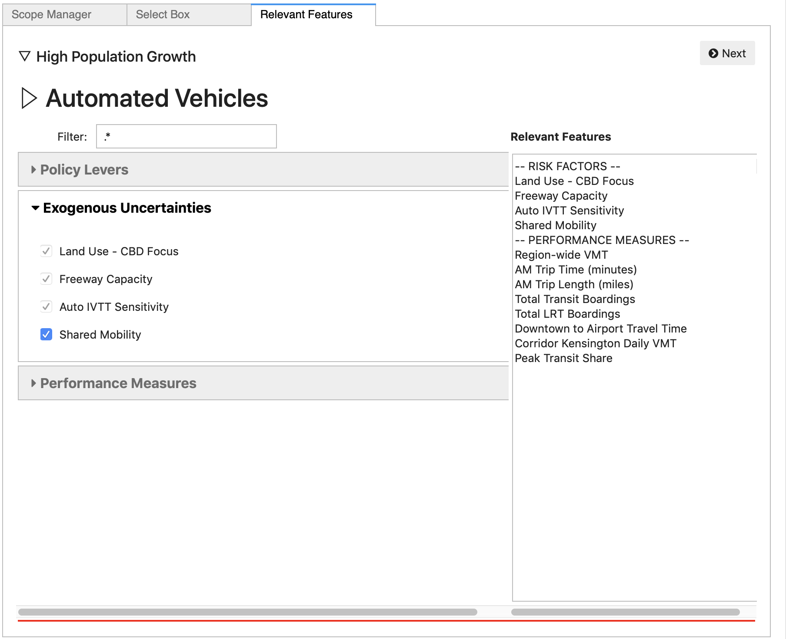

Using the Explorer with GBNRTC Experiments¶
After a design of experiments has been run using a GBNRTC meta-model and
saved into a Database, the interactive Explorer can be used
in a Jupyter notebook to explore the results.
Note
The Explorer is a prototype interface for exploratory analysis, and is provided as a demonstration of an approach to exploratory modeling, not as a full-fledged and polished product. It is not fully tested and not feature complete (for example, you cannot yet move backwards through the panels and edit previous choices with introducing errors).
To launch the Explorer, simply instantiate it with the Database
containing the experiments.
import emat
db = emat.SQLiteDB('gbnrtc_1.sqlitedb')
from emat.interactive import Explorer
Explorer(db)
The initial panel in the Explorer includes options to select the scope and design of experiments to use in this analysis.
And clicking the Next button, the Explorer moves on to a
Box Selection panel. This panel is pre-populated
with any Box objects saved in the database for the current scope.
Any of these existing boxes can be selected to open for this
analysis, or a “New Child” can be created as a descendent of any
existing Box, or of the original complete exploratory scope.
After selecting the box to edit and clicking the Next button, the Relevent Features panel is activated. This panel allows the analyst to select a subset of features defined in the full scope which they would like to manipulate and/or view. Features that are already subject to restrictions (e.g., by inheriting those restrictions from an ancestor box in the hierarchy) are pre-selected and cannot be unselected.
If the list of features is uncomfortably long, the Filter box allows for quickly finding those features that are of interest, by entering a portion of the text in the feature name.
The list on the right summarizes the features that have already been identified as relevant.
Once the relevant features have been selected, click Next to move to the Thresholds panel. On this panel, the analyst can adjust the threshold levels for each feature, limiting the set of experiments contained in the Box. Thresholds can be adjusted on any of the feature dimensions that previously had thresholds set, as well on any of the features selected as “relevant” in the previous panel.
Histograms showing the distribution of values of each relevant dimension
are shown next to the threshold sliders, and these histogram figures are
dynamically updated when the thresholds change, to show the distribution
of cases within the Box, relative to the overall distribution.
Once the Box thresholds are finalized, clicking Next brings up a
report generation plan. A variety of reports are available.